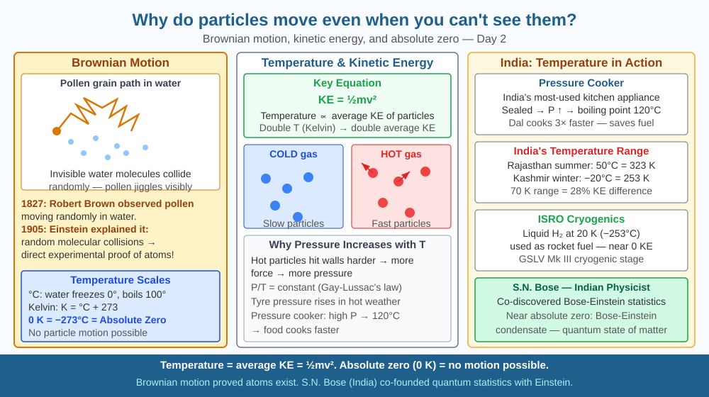

By the end of this lesson, you should be able to explain why particles are always in motion, describe Brownian motion, and predict what happens to particle speed when temperature changes.
A drop of food colouring placed gently into still water spreads slowly without stirring. Smoke particles under a microscope jiggle randomly without any visible cause. What is moving them? And why?
Kinetic energy and temperature: Every particle has kinetic energy (KE = ½mv²). Temperature is a measure of the average kinetic energy of all particles in a substance. Higher temperature = faster particles. At absolute zero (−273.15°C = 0 K), particle motion approaches its minimum.
Brownian motion: In 1827, botanist Robert Brown noticed pollen grains in water moving in random zigzag paths. Einstein explained this in 1905: invisible water molecules constantly collide with the pollen from all directions, but randomly — at any instant, slightly more hits come from one side, pushing the pollen that way. Visible proof of invisible particles.
Why particles move in a solid: Even in a solid, particles vibrate about their fixed positions — they don't stop. This is why solids conduct heat: vibrating particles pass energy to their neighbours.
Evaporation: The fastest-moving particles at the surface of a liquid escape into gas phase. This is why liquids cool as they evaporate — the fastest (hottest) particles leave first, lowering average KE.
Imagine a football stadium packed with players, each bouncing a ball on the spot. The faster each player bounces, the warmer the stadium "feels." Now drop a large inflated beach ball into the crowd. It gets knocked around by all the bouncing — sometimes harder from the left, sometimes from the right — and it drifts in a jittery, unpredictable path. This is Brownian motion: the beach ball is the pollen grain, and the players bouncing balls are water molecules.
Two crucial points from this analogy:
The hotter the stadium (higher temperature), the faster each player bounces, the more forceful each collision with the beach ball, and the faster and more erratically the ball drifts. Temperature controls energy; energy controls motion.
The SVG diagram has two panels. The left panel shows a microscope view: a large pollen grain (labelled "visible particle") surrounded by dozens of tiny water molecules (labelled "invisible particles") with short arrows pointing in random directions from each molecule toward the grain. A dotted zigzag trail behind the pollen grain shows its path over time — sharp random turns at each major collision. The right panel is a temperature comparison: two beakers side by side, one labelled "Cold water (4°C)" and one labelled "Hot water (60°C)." In the cold beaker, water molecules have short arrows indicating slow movement. In the hot beaker, the same molecules have long arrows radiating outward. A red ink drop in each beaker shows a small spread in the cold beaker and a much larger spread in the hot beaker after the same elapsed time, with an inset clock showing "5 minutes."

Refrigerators (Godrej, Whirlpool) work by letting a refrigerant liquid evaporate inside the cooling chamber, absorbing heat energy as the fastest particles escape. India's cold chain for food and vaccines relies on this principle. The ₹77,000 crore Indian refrigerator market depends on particle physics. Understanding evaporative cooling also underlies India's traditional clay pot (matka) cooling — water seeps through porous clay and evaporates, cooling water inside. Every vaccine in India's Universal Immunisation Programme reaches rural health centres through a cold chain maintained by refrigerators whose operating principle is evaporation removing high-energy particles from a liquid.
Place a drop of ink in cold water and another in hot water. Observe which spreads faster. The hot water particles have more kinetic energy → they move faster → they collide with ink particles more forcefully → ink spreads faster. You're watching temperature's effect on particle motion.
Once you have observed the difference, try to estimate: if the ink spreads twice as fast in hot water as in cold, has the temperature doubled (in Celsius)? Heat cold water from 10°C to 40°C — that is a 4× increase in Celsius, but the Kelvin temperatures are 283 K and 313 K, only about 1.1× increase. Average kinetic energy scales with Kelvin temperature, not Celsius. The smaller kinetic energy increase explains why diffusion rates do not quadruple when temperature appears to quadruple on the Celsius scale.
Einstein's 1905 paper on Brownian motion was a landmark proof that atoms and molecules actually exist — this was still debated at the time. By calculating how far a pollen grain would drift in a given time from known molecular masses, Einstein gave experimenters a way to measure Avogadro's number (6.022 × 10²³). This work contributed to Einstein receiving the 1921 Nobel Prize in Physics (though officially for the photoelectric effect, the Brownian motion paper was equally transformative).
At very low temperatures approaching absolute zero, the quantum behaviour of particles becomes dominant. Helium, for example, remains liquid even at near-absolute zero because its quantum zero-point energy prevents it from solidifying under normal pressure. This "quantum jitter" is a residual motion that cannot be removed by any amount of cooling — it is the ground state of the particle, not a thermal effect. So even the statement "motion approaches minimum at absolute zero" has a quantum asterisk.
Predict: A sealed room contains perfume vapour uniformly distributed at 30°C. If the room is cooled to 5°C overnight, would you expect the perfume molecules to still be uniformly distributed in the morning, or to settle toward the floor? Use what you know about kinetic energy and gravity to reason through what would actually happen.
What is the main reason particles in matter are always in motion?
Correct answer: A
Why is knowing the mechanism of particle motion more useful than just knowing they move?
Correct answer: A
If temperature were lowered toward absolute zero, what would happen to particle motion?
Correct answer: C
A student places a sealed glass jar containing a small amount of liquid acetone (nail polish remover) on a warm windowsill at 40°C. The jar feels warm. After moving it to a cool room at 10°C, the student notices tiny droplets forming on the inner glass surface.
Using the kinetic particle model, explain step by step: (a) why acetone molecules left the liquid surface at 40°C to fill the jar with vapour; (b) why the same molecules condense back onto the glass at 10°C; and (c) why the liquid that was left behind at 40°C would feel cool to the touch if the jar were open. Refer specifically to particle speed and kinetic energy in each step. No equipment needed — this is a reasoning exercise.
The motion of particles in matter means that heat travels through a metal rod purely by particles knocking into their neighbours — like toppling dominoes, but in all directions at once. When one end of an iron rod is heated, the iron atoms at the hot end vibrate faster and transfer energy to adjacent atoms, which transfer it onward. This process, called thermal conduction, means the "warmth" you feel from a metal surface is literally atomic vibrations passing from atom to atom through billions of collisions until they reach the atoms in your fingertip. The warmth of a cup of chai is kinetic energy of water molecules transferred via particle collisions all the way to nerve endings in your palm.
Particles in all matter are always moving because they possess kinetic energy proportional to temperature — this invisible motion is what drives evaporation, heat conduction, and the random jitter of Brownian motion.